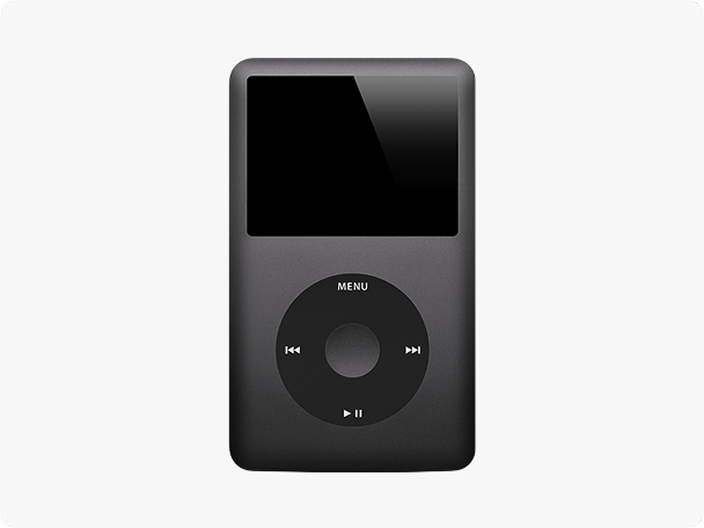

Component reference for the Tinderland swipe-style question type.
The swipe card shown to respondents. Two variants: text-only and image with label. Four states per variant — idle, pressed, swipe left (reject), and swipe right (prefer).
The one I prefer
Idle
The one I prefer
Pressed
The one I prefer
Swipe-L
The one I prefer
Swipe-R

The option label
Idle
The option label
Pressed
The option label
Swipe-L
The option label
Swipe-R
Indicates the current card position in the swipe flow. Four layers: idle dot, active dot, dot group, and the white surface track wrapper.
Dots
Idle
Active
Dot group
Track wrapper
A square emoji button that opens a secondary confirmation menu when activated. Used wherever a respondent can skip a question — the menu requires them to confirm or cancel before progressing. Available in four sizes to suit different contexts.
XS
SM
RG
LG